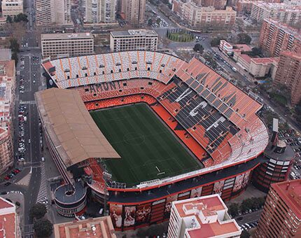
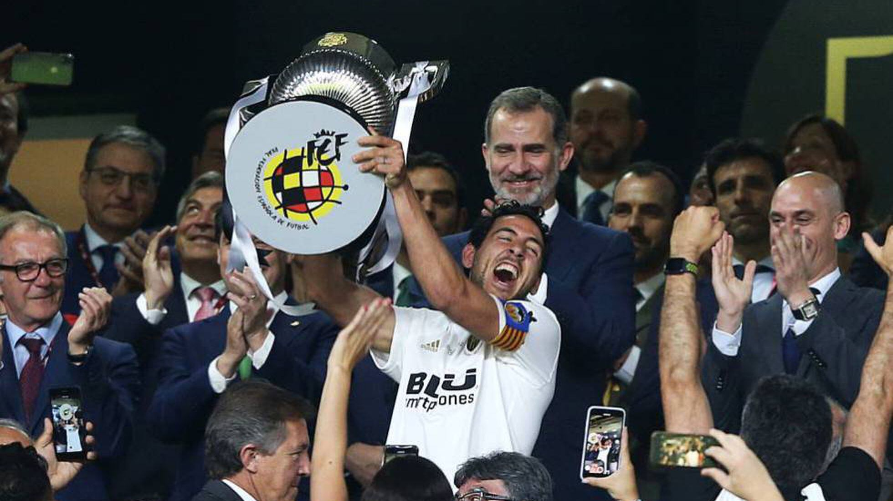
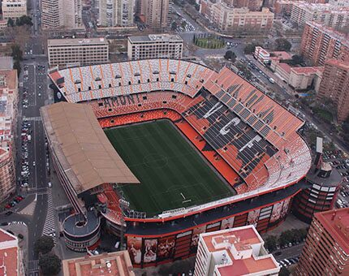
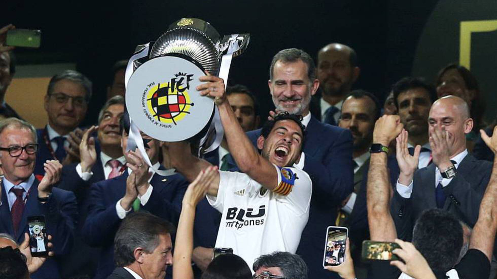

Valencia C.F
El Valencia ha conseguido por primera vez en su historia alzarse con el título de 'Mejor club del Mundo' de 2004, según la clasificación que realiza la Federación Internacional de Estadística e Historia del Fútbol (IFFHS), mientras que el Villarreal logró el premio al mejor club de diciembre. El conjunto 'ché', vigente campeón de la Copa de la UEFA y de la Liga, se convierte en el tercer club español en lograr este título, después de los conquistados por FC Barcelona (1997) y Real Madrid (2000 y 2002) y recoge el testigo del AC Milan, primero en 2003. La temporada ha estado muy igualada, ya que nunca antes, desde 1991, un vencedor del año había conseguido tan bajo número de puntos como en el 2004 y solamente por segunda vez (desde 2003) el ganador del ránking bajaba de los 300.
 


